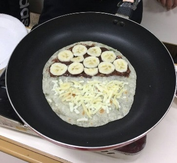

香蕉巧克力起司煎餅
食材:
- 香蕉一根+好吃的巧克力醬+滿滿的起司絲+蛋餅皮兩片
STEP:
- 開小火，蛋餅皮不放油直接下鍋乾煎，逼出水分後餅皮會膨脹，就可以先起鍋備用
- 取一張餅皮塗抹巧克力醬
- 另一張餅皮上面放少許的起司，不用太多，只是要透過起司融化讓兩張餅皮結合而已
- 起司那片在下，巧克力那片在上，然後鋪滿香蕉片，不要切太厚，因為這樣要放很多起司才能覆蓋香蕉，起司放太多會很鹹
- 起司灑滿就好，可以覆蓋香蕉就好，放太多真的會很鹹
- 開小火，蓋上鍋蓋讓起司融化就可以了 蛋餅皮不大容易燒焦，只會越來越脆
- 起鍋後上面撒上一些堅果粉、餅乾屑，或是巧克力醬裝飾都不錯
花絮照片

